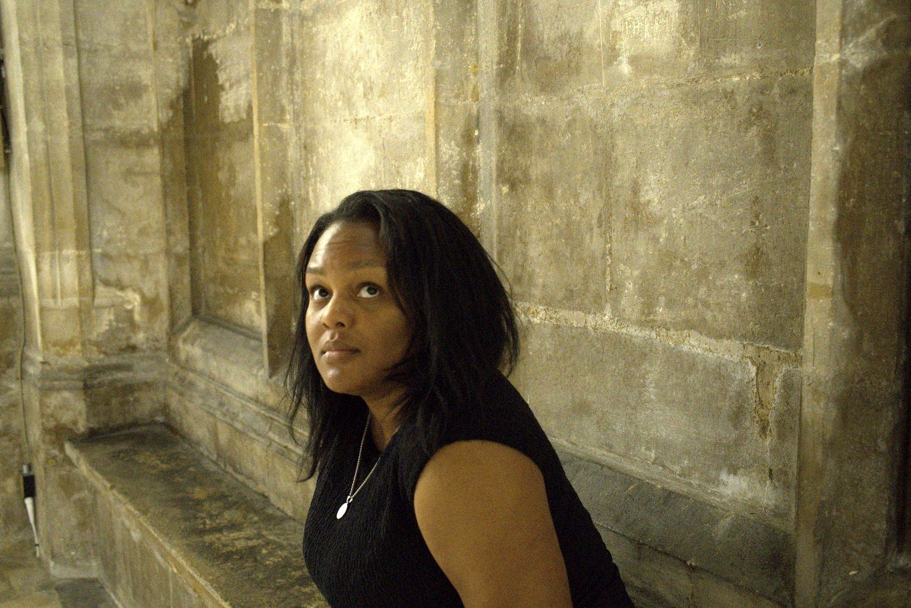
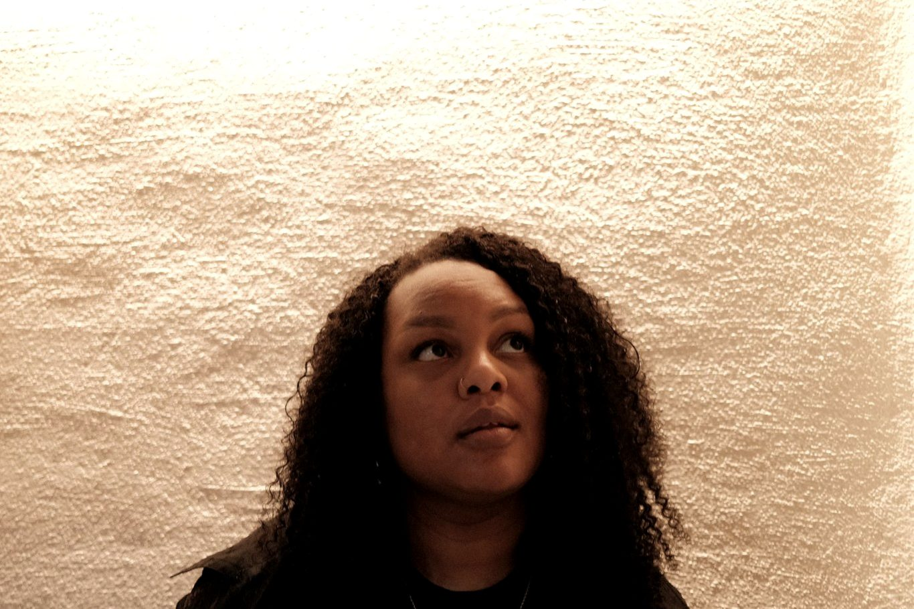
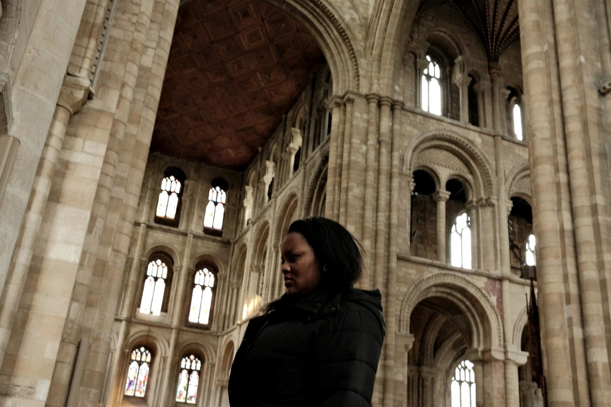

About
Uncovering the people, places and stories of the past
Historian, researcher and consultant working across archives, museums, publishing and public history.

History has been a constant fascination from an early age, beginning with early childhood visits to museums and a fascination with uncovering the people, places and stories of the past. That curiosity developed into formal study and, eventually, work across historical research, museums, public history and consultancy.
My historical interests are broad, with a particular fascination for periods of transition, movement and exchange. Areas of study have ranged from late antiquity, the later Roman Empire and early Christianity to early medieval Britain and the transformation of the post-Roman world. I have an in-depth knowledge of medieval history, with a particular focus on global and inter-cultural interactions and on medieval and early modern cartography. The movement of people, goods, languages and ideas, and the ways societies respond to periods of significant change, remain recurring interests throughout my work. I always work as a generalist, with a wide range of interests and knowledge, including the Reformation and the French Revolution.

Principal research
West Africa, 900–1500 CE
My principal area of research is West Africa between 900 and 1500 CE, particularly the kingdoms and empires of Ghana, Mali, Songhai and Kongo. This research explores systems of governance, long-distance trade, and the diverse peoples, cultures and traditions that shaped the region.
My work is guided by the careful interrogation of sources, critical engagement with established narratives, and an approach that seeks to understand the past within its own historical context.
Method
Training in Latin, Ancient Greek, palaeography and the study of manuscripts has reinforced an interest in working closely with historical evidence and uncovering the stories it can tell.
Central to this approach is a love of storytelling and a belief that academic rigour and accessibility need not exist separately. Historical research can be complex without being inaccessible. Whether through research, museums, writing, consultancy or public engagement, the aim is to bridge academic and public history: taking the methods, evidence and critical thinking of scholarship and using them to communicate the past clearly, accurately and engagingly.
Education
Training
University College London
MA Medieval & Renaissance History
- The Globe: Medieval and Renaissance
- Medieval Latin and introductory Ancient Greek
- Latin palaeography and codicology
- Medieval manuscripts and visual culture
- Historical methodology and historiography
- Archival and primary source research
Dissertation — Connections, Myths and Misconceptions: Europe and West Africa in the Late Middle Ages
University of Warwick
BA (Hons) History
- Early medieval Britain and post-Roman transition
- Late antiquity and the Roman Empire
- Medieval Europe
- The Reformation and early modern Europe
- The French Revolution
- Global trade and cross-cultural exchange
Dissertation — Mansa Musa, the Mali Empire & Methods of Imperial Control

A particular fascination for periods of transition, movement and exchange — and for the ways societies respond to significant change.
Enquiries
Let's talk about your project
Research, consultancy, writing or a talk — tell me what you need and I'll tell you how I can help.